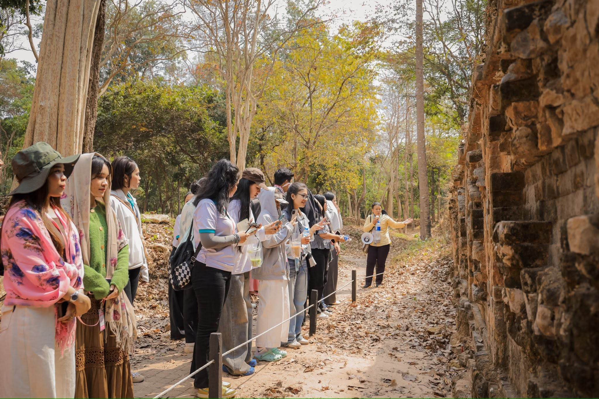
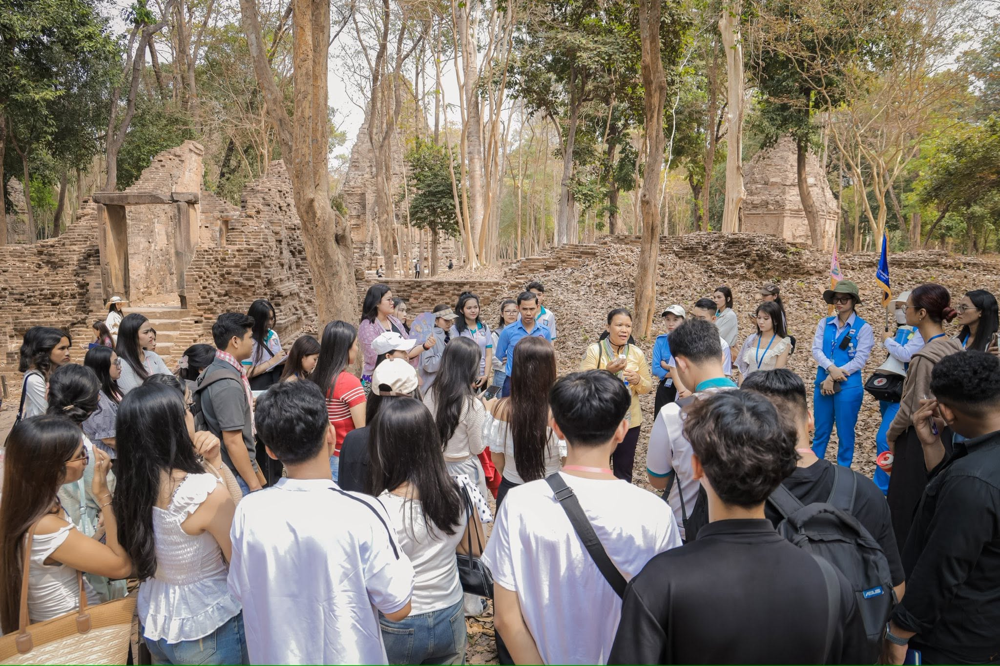

សាកលវិទ្យាល័យ ប៊ែលធី អន្តរជាតិ បានរៀបចំដំណើរទស្សនកិច្ចសិក្សា(Field Trip) ជូននិស្សិតឆ្នាំទី៣ ឆមាសទី២ មកពីគ្រប់វេនសិក្សា និងគ្រប់មហាវិទ្យាល័យ នៃសាកលវិទ្យាល័យ ប៊ែលធី អន្តរជាតិ (ទីតាំងទី២-ស្ពានអាកាសចោមចៅ) មកកាន់រមណីយដ្ឋានប្រាសាទប្រាសាទសំបូរព្រៃគុក ខេត្តកំពង់ធំ (១ថ្ងៃ វិលល្ងាច) ក្នុងគោលបំណងដើម្បីជំរុញការសិក្សារបស់និស្សិត ទាំងក្នុងថ្នាក់ និងក្រៅថ្នាក់ ព្រមទាំងសិក្សាយល់ឱ្យកាន់តែស៊ីជម្រៅពីក្រុមប្រាសាទ និងសិលាចារឹកនានា ក្នុងបរិវេណរមណីយដ្ឋានប្រាសាទសំបូរព្រៃគុក ដែលជាសំណង់ស្ថាបត្យកម្មបានបន្សល់ទុកតាំងពីសម័យចេនឡា ជាពិសេសនិស្សិតត្រូវឱ្យសរសេររបាយការណ៍ ស្ដីពីដំណើរទស្សនកិច្ចសិក្សា ដើម្បីដាក់ពិន្ទុ (On-going Assessment) ប្រចាំឆមាសផងដែរ។
ដំណើរទស្សនកិច្ចសិក្សានេះ បានប្រព្រឹត្តទៅនាថ្ងៃសៅរ៍ ៥រោច ខែមាឃ ឆ្នាំម្សាញ់ សប្តស័ក ព.ស. ២៥៦៩ ត្រូវនឹងថ្ងៃទី៧ ខែកុម្ភៈ ឆ្នាំ២០២៦ ដោយធ្វើដំណើរតាមរយៈរថយន្តប៊ែលធី ទេសចរណ៍។
“Field Trip of 350 Students of Year 3 Semester 2 to Sambor Prei Kuk Temple, Kampong Thom Province” BELTEI International University organized a field trip for Year 3 Semester 2 Students from all Shifts and all Faculties of BELTEI International University, Campus 2-chomchao flyover to Sambor Prei Kuk Temple, Kampong Thom Province (1 day in the evening), in order to promote the study of students both in the classroom and outside the classroom, in addition, students are required to gain a deeper understanding of the temple groups and various inscriptions within the Sambor Prei Kuk archaeological site, which features architectural structures preserved from the Chenla era, in particular, students are required to write a report on the study tour to score on (On-going Assessment) for the semester. This field trip was conducted on Saturday, February 7, 2026 by traveling through BELTEI Tour and Travel Buses. #BELTEI_IU #Sambor_Prei Kuk_Temple #BELTEI_International_University

